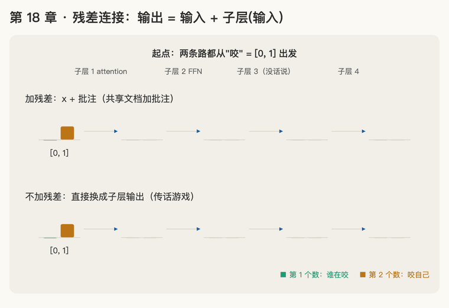

第 18 章 · 残差连接：输出 = 输入 + 子层(输入)
本章回答：attention 算完的新向量，为什么不直接拿来用，而要再加上原来的向量？为什么有了它层可以叠很多？
讲解日期：2026-11-05 · 上一章：第 17 章 因果 mask · 下一章：第 19 章 LayerNorm
对应原文：materials/text/papers/attention-is-all-you-need-1706.03762.txt§3.1，L128–L135、L139–L140
本章缩写：Q / K / V = Query（查询）/ Key（键）/ Value（值）；\(d_{model}\)：d = dimension（维度），每个词向量有几个数（论文 512）；FFN = Feed-Forward Network（前馈网络）；LayerNorm / LN = Layer Normalization（层归一化）；sin = sine（正弦）；cos = cosine（余弦）；ResNet = Residual Network（残差网络）；CS336 = Stanford 课程 CS 336（Computer Science 336，Language Modeling from Scratch）；代码里的名字（PyTorch、nn.Linear等）见附录"PyTorch 对照"。全部缩写见 附录 · 缩写与术语表
讲解
第一步：attention 的结果会把词自己"顶掉"（2026-11-05）
先认识"子层"：Transformer 的每一层里有两个小零件，论文叫 sub-layer（子层）：第一个是多头 attention（第 9–13 章），第二个是前馈网络 FFN（第 20 章）。子层做的事可以记成 \(\text{Sublayer}(x)\)：输入一个词的向量 \(x\)，输出一个新向量。
问题：拿第 17 章"狗咬人"里的"咬"来看。设 "狗" = [2, 0]，"咬" = [0, 1]（第 14 章用过的词向量），"咬"那一行加了 mask 后的权重是 0.73、0.27、0。attention 按比例取信息（第 4 章；为了简单，这里直接拿词向量当 V）：
如果直接拿 [1.46, 0.27] 当"咬"的新向量：第 2 个数（"咬"自己的特征）从 1 掉到了 0.27，整个向量看起来更像"狗" [2, 0]。"咬"取来了别人的信息，却把自己是谁弄丢了。
类比：改作文。 老师批改时用红笔在原文旁边写批注，你的作文还在；而不是把你的作文撕掉，换成他写的一篇。attention 的结果应该是"批注"，加在原来的向量上，而不是顶替它。
修法：残差连接（residual connection）：把子层的输出加回原来的输入：
论文 L131–L133：每个子层外面都套一个残差连接，子层的输出是 \(\text{LayerNorm}(x + \text{Sublayer}(x))\)。LayerNorm 是第 19 章的内容，这一章只看括号里的 \(x + \text{Sublayer}(x)\)。
一句话：子层算出来的是"批注"，要加在原来的向量上；输出 = 输入 + 子层(输入)，词自己的信息不会丢。
第二步：6 层叠起来：原文一直在，每层往上加批注（2026-11-05）
论文有几层：encoder 是 \(N = 6\) 个一模一样的层叠起来（L128），每层两个子层，一共 12 个子层，每个都套着残差连接。
（这一步先不管 LayerNorm，第 19 章再加进来。）
把加法一层层展开：记第 0 层输入是 \(x_0\)，第 \(\ell\) 个子层的批注是 \(s_\ell\)：
最后的向量 = 最初的词向量 + 12 条批注。原来的 \(x_0\) 从头到尾一直在里面，没有被谁换掉过。
不加残差会怎样：每一层都把上一层的结果整个换成新的，\(x_{12} = \text{Sub}_{12}(\cdots\text{Sub}_2(\text{Sub}_1(x_0)))\)。原来的词要穿过 12 次改写才能留到最后。
类比：传话游戏 vs 共享文档。
| 传话游戏（不加残差） | 共享文档加批注（加残差） | |
|---|---|---|
| 怎么传 | 每个人只听上一个人的复述，再说给下一个 | 原文一直在文档里，每个人只在旁边加批注 |
| 传 12 个人以后 | 原话可能早就走样了 | 原文完好，外加 12 条批注 |
这条从头贯穿到尾、不断往上加东西的向量，后来的研究常叫它 residual stream（残差流）：每个子层从里面读信息，算出批注，再加回去。
一句话：有了残差连接，最后的向量 = 原词向量 + 每个子层的批注；原文一直在，不会被层层改写弄丢。
第三步：没话说就不写：残差让"什么都不做"变得容易（2026-11-05）
问题：叠 6 层、12 个子层，万一某个子层没学到什么有用的东西，会不会把结果弄坏？
不加残差：输出 = \(\text{Sublayer}(x)\)，结果完全由这个子层决定。一个没用的子层要想"不添乱"，必须学会把输入一字不差地抄出来（输出 = 输入）。让一堆乘法加法恰好算出"原样不变"，并不容易。
加了残差：输出 = \(x + \text{Sublayer}(x)\)。这个子层想"不添乱"，只要让批注 \(\text{Sublayer}(x)\) 接近 0 就行，输入就原样通过。
类比：传话员 vs 批注员。 传话员没听懂也得复述一遍，复述错了就传歪了；批注员没什么可说，空着不写就行，原文不受影响。
| 不加残差 | 加残差 | |
|---|---|---|
| 子层没用时要做到 | 输出 = 输入（原样抄一遍） | 批注 = 0（空着不写） |
| 难不难 | 难 | 容易 |
| 最坏情况 | 把结果弄坏 | 这一层像不存在 |
所以有了残差，层数可以放心往上加：多加的层最差也就是"没帮上忙"，不会把前面的成果抹掉。论文引用的 [11] 是 He 等人 2015 年的 ResNet（L577），这个想法最早就是为了把图像网络叠到上百层提出来的。
一句话：有残差时，子层只负责"补充"；没什么可补充就写 0，输入原样通过，所以叠很多层也不怕。
动画演示：两条路：加残差 vs 不加残差

可交互版：animations/18-residual.html（要能点按钮、拖滑块，需要用本地服务打开，见 animations/README.md"跑起来看"；滑块调"批注写多大"，拖到 0 就是每层都空着不写）。
"咬" = [0, 1] 依次穿过 4 个子层（论文有 12 个），每个子层写一条批注；绿色柱是第 1 个数（"谁在咬"），橙色柱是第 2 个数（"咬自己"）。批注数字是编的，只看形状。
怎么看：
- 上面一条加残差（共享文档加批注），下面一条不加（传话游戏）；
- 子层 1 之后：上面 [1.46, 1.27]，"咬自己"还在；下面 [1.46, 0.27]，快没了（第一步、题 1）；
- 子层 3 批注为 0：上面原样透传；下面变成 [0, 0]，词整个没了（第三步、题 3）；
- 最后上面 = 原词 + 所有批注（第二步），下面只剩最后一个子层写的东西。
练习与作答记录
题 1："咬"原来是 [0, 1]，attention 子层算出来是 [1.46, 0.27]。用残差连接，"咬"的新向量是多少？第 2 个数（"咬"自己的特征）还在吗？
作答（2026-11-05）："1.46，1.27"。✓（向量算对；"还在吗"没明说，数字已经说明了）
点评：对。[0, 1] + [1.46, 0.27] = [1.46, 1.27]。第 2 个数是 1.27，比原来的 1 还大，"咬"自己的特征完整保留；第 1 个数 1.46 是从"狗"那里取来的信息（"谁在咬"）。对比不加残差的 [1.46, 0.27]，自己的特征只剩 0.27。已加入卡片 R47。
题 2：残差连接要把 \(x\) 和 \(\text{Sublayer}(x)\) 对位相加。论文 L134–L135 说"所有子层和 embedding 层的输出都是 \(d_{model} = 512\) 维"，为什么必须这样？（提示：第 16 章题 2）
作答（2026-11-05）："一共 256 层，sin cos 一起就是"。✗（又回到了第 16 章题 2 的"256 × 2 = 512"，而且把"层"和"轮子"混了）
点评：这题和位置编码的 256 个轮子没有关系，层数也是 6 层（L128），不是 256 层。答案只在"对位相加"四个字里：
- 对位相加 = 第 1 个数加第 1 个数，第 2 个数加第 2 个数……两个向量必须一样长，每个位置才有人配对；
- \(x\) 是 512 个数（词向量 \(d_{model} = 512\)），所以 \(\text{Sublayer}(x)\) 也必须是 512 个数，\(x + \text{Sublayer}(x)\) 才加得起来；
- 加完还是 512 个数，下一个子层再加，照样对得上。12 个子层一路加下去，每一步都得是 512。
| 能对位相加吗 | |
|---|---|
| [1, 2, 3] + [4, 5, 6] | 能：[5, 7, 9] |
| [1, 2, 3] + [4, 5] | 不能：第 3 个数没人配对 |
和第 16 章题 2 是同一个道理：那里是"号码牌要和词向量相加，所以号码牌也是 512 个数"；这里是"子层输出要和输入相加，所以子层输出也是 512 个数"。先有"要相加"，才定"一样长"。已加入卡片 R48，R34 补了一条复习记录。
题 2 再练：如果某个模型的词向量是 768 个数，它的每个子层输出应该是几个数？为什么？
作答（2026-11-05）："768，要相加就必须一致"。✓
点评：完全对，而且理由说的就是"要相加"，因果顺序对了。
题 3：某个子层的批注是 [0, 0]，输入 \(x\) = [1.46, 1.27]。残差后是多少？这一层相当于什么？
作答（2026-11-05）："1.46，1.27，相当于透传了特征"。✓
点评：对。[1.46, 1.27] + [0, 0] = [1.46, 1.27]，"透传"这个词很准：这一层什么都没改，输入原样传给下一层，就像这一层不存在。不加残差的话，这一层输出 [0, 0]，"咬"就整个没了。已加入卡片 R49。
口诀
子层只写批注，不撕原文：输出 = x + 子层(x)；
层层往上加，原词一直在；
要相加就得一样长，没话说就写 0，原样透传。
本章复习卡片
- R47（残差连接：输出 = x + Sublayer(x)；"咬" [0, 1] + [1.46, 0.27] = [1.46, 1.27]，自己的特征不丢）
- R48（为什么所有子层输出都是 \(d_{model}\) 维：残差要对位相加，两个向量必须一样长）
- R49（残差让"不做事"容易：批注 = 0 时输入原样透传；不加残差则要学会原样抄写，否则把结果弄坏）
附录 · 延伸阅读
留给以后深入学习用，不影响本章主线。★ 是建议先读的。
- 本地论文的文本版在materials/text/papers/，表里的行号就是指这个文本版。
- CS336 handout 在cs336-spring2025/materials/text/cs336_spring2025_assignment1_basics.txt。
推荐阅读
| 读什么 | 读哪里 | 读它为了什么 |
|---|---|---|
| ★ Attention Is All You Need | §3.1 L128–L135（encoder）、L139–L140（decoder） | 本章原文：\(N = 6\) 层、每层两个子层；每个子层外套残差，输出 \(\text{LayerNorm}(x + \text{Sublayer}(x))\)；所有子层输出 \(d_{model} = 512\) 维是为了能相加（题 2） |
| ★ CS336 assignment 1 handout | §3.5 Pre-Norm Transformer Block（L937–L951）；§3.6（L1255–L1260） | 动手要写的版本：原论文是 post-norm，现在通用的是 pre-norm（先 norm 再进子层，再加残差）；L947–L948 正好用了"residual stream"这个说法。第 19 章讲完 LayerNorm 再细看 |
| He et al. 2015，Deep Residual Learning for Image Recognition（ResNet，论文引用 [11]，L577） | 引言 + Figure 2（残差块示意图） | 残差连接的出处：第三步"没话说就写 0"的原始动机，把图像网络叠到上百层（本地没有文本版） |
| Olsson et al. 2022，In-context Learning and Induction Heads | L469、L706、L817 等处 | "residual stream"的用法：每个 attention head 从残差流读、往残差流写（第二步）。阶段 A7 精读 |
| Xiong et al. 2020，On Layer Normalization in the Transformer Architecture | preln-on-layer-normalization-2002.04745.txt |
学完第 19 章再读：LayerNorm 放在残差的里面还是外面，对训练有多大影响 |
数学原理
- 展开成求和：\(x_\ell = x_{\ell-1} + s_\ell\) 一路代下去，\(x_L = x_0 + \sum_{\ell=1}^{L} s_\ell\)。最后的向量 = 原词向量 + 所有子层的批注（第二步；不考虑 LayerNorm 时严格成立）。
- 恒等映射容易学：要让一层"什么都不做"，不加残差要学 \(f(x) = x\)；加了残差只要学 \(f(x) = 0\)（比如权重全接近 0）。后者容易得多（第三步）。
- 预告：梯度的直路：对 \(y = x + f(x)\) 求导，\(\frac{dy}{dx} = 1 + f'(x)\)。那个"1"意味着训练时的改错信号总能沿着 \(+x\) 这条路原样传回前面的层，不会在层层相乘中变得很小。主线 ②（反向传播）再细讲。
- 对位相加要求同维度：\(x, \text{Sublayer}(x) \in \mathbb{R}^{d_{model}}\)，所以所有子层的输入输出都是 \(d_{model}\) 维（题 2，同第 16 章 R34）。
公式清单
| 公式 | 意思 |
|---|---|
| \(y = x + \text{Sublayer}(x)\) | 残差连接：原向量 + 批注 |
| \(\text{LayerNorm}(x + \text{Sublayer}(x))\) | 论文原式（L132–L133），LayerNorm 第 19 章讲 |
| \(x_L = x_0 + \sum_{\ell=1}^{L} s_\ell\) | 层层叠加：原词一直在（residual stream） |
| 批注 \(= 0 \Rightarrow y = x\) | 没话说就透传 |
| \(\frac{d}{dx}\left(x + f(x)\right) = 1 + f'(x)\) | 梯度有一条直路（主线 ② 预告） |
PyTorch 对照：把本章的数字用代码算一遍
代码在仓库本地
transformer-deep-dive/solutions/chapter-code/ch18_residual.py，配套测试tests/test_ch18_21.py（在线版不带代码文件，下面摘了关键几行）。Mac 上直接能跑，不需要 GPU：
bash cd transformer-deep-dive/solutions/chapter-code uv run python ch18_residual.py
讲义 ↔ 代码：
| 讲义 | 公式 / 说法 | PyTorch 写法 | 跑出来 |
|---|---|---|---|
| 会把自己顶掉 | attention 结果 [1.46, 0.27] | — | "咬"自己那一位从 1 掉到 0.27 |
| 残差 | \(x + \text{Sublayer}(x)\) | x + sublayer(x) |
[1.46, 1.27] |
| 残差流 | \(x_{12} = x_0 + s_1 + \dots + s_{12}\) | 12 次 x = x + s |
x − x0 正好是 12 条批注之和 |
| 什么都不做 | 批注 = 0 | 权重全 0 的 nn.Linear |
不加残差输出全 0；加了输出 = 输入 |
| 叠 12 层还剩多少原文 | 传话 vs 共享文档 | 余弦相似度 | 不加残差 −0.05，加残差 0.42 |
关键几行：
def residual(x, sublayer):
return x + sublayer(x)
nn.init.zeros_(quiet.weight); nn.init.zeros_(quiet.bias) # 一个"没话说"的子层
residual(x0, quiet) == x0 # 原样通过
代码里才看得到的：
- 余弦相似度（cosine similarity：两个向量方向有多像，1 = 同方向，0 = 不相干，负数 = 反方向）：叠 12 个随机子层后，不加残差的输出和原文几乎没关系（−0.05）；加了残差还留着一大块（0.42）。不是 1，因为 12 条批注也加进去了。
nn.init.zeros_：把参数直接填成 0（末尾的下划线表示"原地改"）。批注为 0 时，残差版的输出和输入一位都不差。